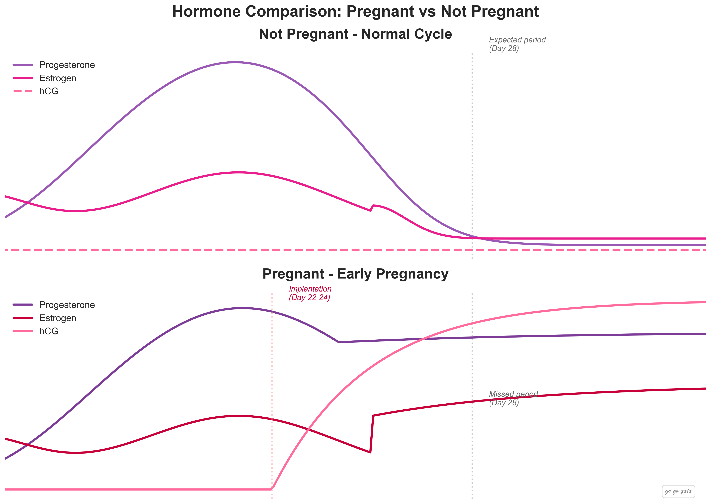
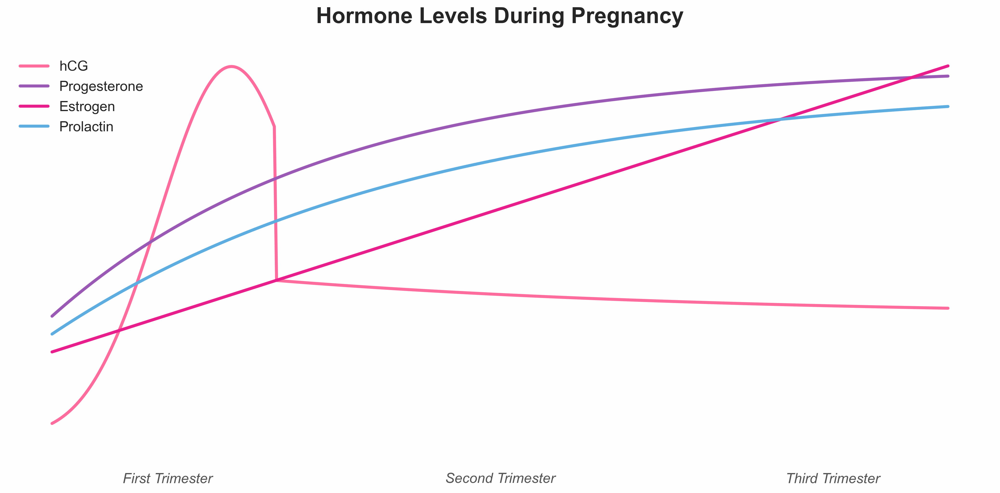
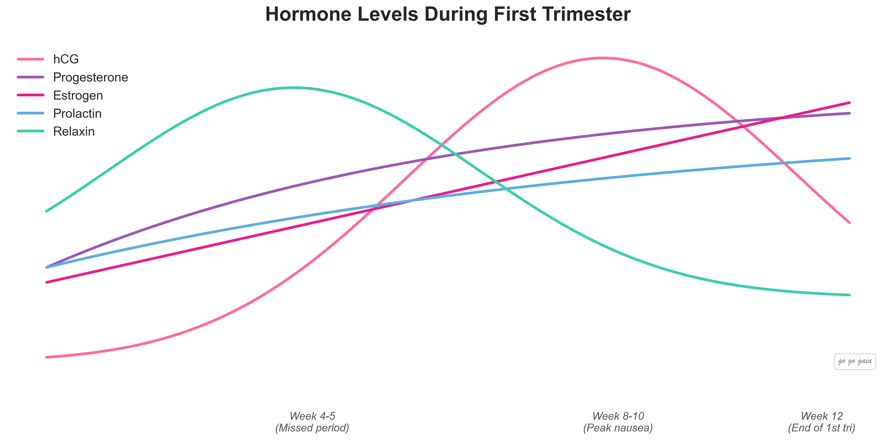
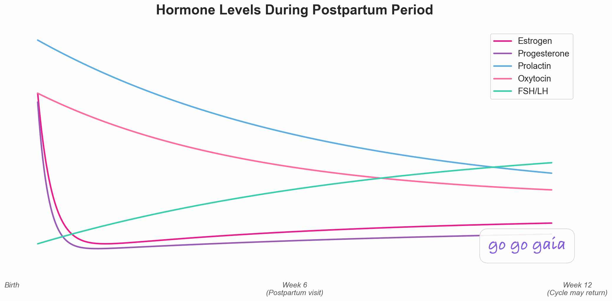

Pregnancy Wellness Tips: Healthy Habits for Each Trimester
What actually helps with nausea, fatigue, mood, nutrition, and exercise during every stage of pregnancy
Medical Disclaimer
This article is for educational and informational purposes only and does not constitute medical advice. Always consult your OB-GYN, midwife, or healthcare provider before making changes to your diet, exercise routine, or lifestyle during pregnancy. Every pregnancy is different. If you experience severe symptoms or have concerns about your health or your baby's health, seek immediate medical attention. If you're experiencing a mental health crisis, call 988 (Suicide & Crisis Lifeline).
You read the books. You downloaded the apps. But nobody told you that first-trimester fatigue would feel like you ran a marathon in your sleep. Or that the second trimester "glow" comes with its own set of weird surprises. Or that your third-trimester body would feel both powerful and completely foreign at the same time.
Every trimester brings new challenges. But small, specific habits can make a real difference in how you feel. This isn't a generic list of "eat well and exercise." It's a trimester-by-trimester breakdown of what actually works, backed by what organizations like ACOG and the NIH recommend.
(Just found out you might be expecting? Start with our guide on early pregnancy signs and when to test.)
Why Tracking Helps During Pregnancy
When you log symptoms, you spot patterns. Maybe your nausea is worst at 3pm, not morning. Maybe walking 20 minutes helps your sleep but yoga doesn't. Maybe your mood dips happen the same week every time.
That kind of data helps you make better decisions. It also gives your OB-GYN something concrete to work with at appointments. Not a replacement for prenatal care. A tool that makes your prenatal care more productive.
For a detailed week-by-week checklist of what to track, see our Pregnancy Tracking Guide.
How Far Along Am I?
Find out your exact week, what baby is up to, and tips for this stage.
Try the CalculatorFirst Trimester (Weeks 1-12): The Foundation
What's Happening to Your Body

What happens to your hormones when pregnancy begins. The shift is dramatic.
Your HCG levels are doubling every 48-72 hours. Progesterone is surging. That's why you feel the way you feel: exhausted, nauseous, and emotionally all over the place.
About 70-80% of pregnant women experience some form of morning sickness during weeks 6-12, according to ACOG. Your baby's brain, heart, and spinal cord are forming right now. That makes this a critical time for folic acid and avoiding harmful substances.

Hormone changes throughout pregnancy. The first trimester spike in HCG is what drives most early symptoms.
Managing Morning Sickness
"Morning sickness" is a terrible name for something that can hit at 2pm or 11pm. Here are strategies that research and real-world experience suggest may help:
- Eat before you feel hungry. An empty stomach makes nausea worse. Keep crackers by your bed and eat a few before you even sit up.
- Small, frequent meals beat three big ones. Aim for eating something every 2-3 hours.
- Ginger actually works. It's one of the few natural remedies with real research behind it. Ginger tea, ginger candies, or ginger supplements (talk to your doctor about dosage).
- Stay hydrated, even if water sounds terrible. Try sparkling water with lemon, popsicles, or watermelon.
- Track your triggers. Some women find spicy or greasy foods are the worst. Others can't handle strong smells. Logging what sets it off helps you avoid it.
If you can't keep any food or liquids down for 24 hours, call your provider. That could be hyperemesis gravidarum, and it needs medical treatment.
First Trimester Nutrition
Talk to your OB-GYN about your specific needs, but here's what most providers recommend:
- Folic acid: 400-800 mcg daily (most prenatal vitamins cover this). Critical for preventing neural tube defects.
- Iron: Your blood volume is increasing by up to 50%. Spinach, lentils, and lean red meat help prevent anemia.
- Protein: About 75g daily (roughly a palm-sized serving at each meal). Eggs, Greek yogurt, chicken, beans, and tofu all count.
- Water: About 10 cups (80oz) per day is a common recommendation, but ask your provider.
If your prenatal vitamin makes nausea worse, talk to your doctor. Sometimes switching brands, taking it at night, or trying a gummy version helps.
Energy and Sleep

HCG peaks around weeks 8-10. That's often when fatigue and nausea are at their worst.
First-trimester fatigue is next-level. Your body is building an entirely new organ (the placenta) while your progesterone levels spike. It's normal to feel like you need 12 hours of sleep.
- Nap when you can. Even 20 minutes helps.
- Go to bed earlier. Most first-trimester women need 1-2 extra hours of sleep.
- Light movement helps. Even a 10-minute walk may boost your energy more than staying on the couch. Counterintuitive, but research backs it up.
- Track your energy patterns. You might find you have a reliable "good window" each day. Use it for the things that matter most.
Second Trimester (Weeks 13-26): The Good Part
What's Happening
For many women, the second trimester feels like a relief. Nausea fades (usually around week 14-16). Energy comes back. You might actually feel good.
Your baby is growing fast. By week 20, they're about 10 inches long and can hear your voice. You'll start feeling movement (called "quickening") between weeks 16-22. First-time moms may not notice until closer to week 25.
Your body is changing visibly now. Your belly is growing, your center of gravity is shifting, and round ligament pain (those sharp pulling sensations on the sides of your belly) can catch you off guard.
Movement and Exercise
This is often the best trimester for staying active. With your provider's clearance, ACOG recommends at least 150 minutes of moderate-intensity activity per week. That's about 30 minutes, 5 days a week.
Here's what tends to work well:
- Walking is the simplest option and one of the most effective.
- Swimming takes pressure off your joints. It feels amazing as your belly gets bigger.
- Prenatal yoga builds strength and flexibility. It also helps with the breathing techniques you'll use during labor.
- Modified strength training keeps your muscles engaged for labor and recovery. Avoid exercises lying flat on your back after week 16.
- Pelvic floor exercises (Kegels) are worth doing daily. Strong pelvic floor muscles support your growing uterus and may help with delivery and postpartum recovery.
Stop exercising and call your provider if you experience bleeding, dizziness, chest pain, or regular contractions.
Second Trimester Nutrition
You need about 340 extra calories per day in the second trimester. That's roughly a banana with peanut butter and a glass of milk. Not "eating for two" in the way most people imagine.
- Calcium: 1,000mg daily. Your baby's bones are hardening. Dairy, fortified plant milks, almonds, and leafy greens.
- Omega-3 fatty acids: Important for baby's brain development. Low-mercury fish like salmon (2-3 servings per week), walnuts, and chia seeds.
- Iron: Your needs increase as your blood volume grows. Your provider may check your levels around week 24-28.
- Fiber: Constipation is common. Fruits, vegetables, whole grains, and drinking enough water help.
Common Discomforts and What Helps
- Round ligament pain: Move slowly when changing positions. A warm (not hot) compress may help.
- Heartburn: Eat smaller meals, stay upright after eating, and avoid spicy or acidic foods. Ask your provider about safe antacids.
- Back pain: Good posture matters more now. Maternity support belts can help. Prenatal yoga focuses on strengthening your back.
- Leg cramps: Stretch your calves before bed. Stay hydrated. Make sure you're getting enough magnesium (ask your provider).
Third Trimester (Weeks 27-40): The Home Stretch
What's Happening
Your baby is gaining about half a pound per week. Their lungs are maturing. Their brain is developing rapidly. And they're running out of room. You'll feel less graceful kicks and more rolling, pushing movements.
Your body is getting ready for labor. Braxton Hicks contractions become more frequent. You might feel pelvic pressure as baby drops lower. Sleep gets harder. Your bladder has approximately zero capacity.
Sleep Strategies
Third-trimester sleep is rough for almost everyone. Here's what may help:
- Sleep on your side. Left side is ideal for blood flow, but either side works. Use a pregnancy pillow between your knees and under your belly.
- Limit fluids in the 2 hours before bed to reduce bathroom trips.
- Prop your upper body up slightly if heartburn keeps you up.
- Keep your bedroom cool. Pregnancy raises your core body temperature.
- If you can't sleep, don't fight it. Get up, read something boring, and try again in 20 minutes.
Talk to your doctor if you're getting fewer than 4-5 hours of sleep regularly. Chronic sleep deprivation may increase the risk of complications like gestational diabetes and preeclampsia.
Kick Counts
Starting around 28 weeks, your provider will likely ask you to track fetal movement. Here's the standard approach:
- Pick a time when baby is usually active (often after eating or in the evening).
- Count how long it takes to feel 10 movements. Kicks, rolls, and jabs all count.
- It should take less than 2 hours, and usually takes much less.
- Track daily at roughly the same time. This helps you learn your baby's patterns.
If you notice a significant decrease in movement, don't wait. Call your provider right away.
Braxton Hicks vs. Real Contractions
Braxton Hicks are irregular, usually painless (just tight), and go away if you change positions or drink water. Real contractions get closer together over time, get stronger, and don't stop when you move around.
Track the timing, duration, and intensity. That data is exactly what your provider needs to help you figure out if it's time.
Preparing Your Body
- Perineal massage (starting around week 36) may reduce the risk of tearing during delivery. Ask your provider or a pelvic floor therapist about technique.
- Prenatal yoga and breathing exercises prepare your mind and body for labor.
- Walking stays beneficial right up to your due date (with provider approval).
- Pack your hospital bag by 36 weeks. You don't want to be scrambling.
Your Mental Health During Pregnancy
This one doesn't get talked about enough.
About 1 in 5 women experience depression or anxiety during pregnancy, according to ACOG. It's not just "hormones." It's a real medical condition that affects your health and your baby's health, and it deserves real attention.
Signs to Watch For
- Persistent sadness, emptiness, or hopelessness lasting more than 2 weeks
- Losing interest in things you used to enjoy
- Significant changes in sleep or appetite beyond normal pregnancy changes
- Excessive worry or fear that feels hard to control
- Difficulty bonding with your pregnancy
- Intrusive or scary thoughts
What to Do About It
- Talk to your OB-GYN. Perinatal mood disorders are common and treatable. There's no reason to white-knuckle through pregnancy.
- Track your mood daily. Even a simple 1-10 rating helps you spot patterns and gives your provider concrete data. (Our guide on why mood tracking matters explains how.)
- Stay connected. Isolation makes mood issues worse. Even a daily text check-in with a friend counts.
- Move your body. Exercise is one of the strongest evidence-based interventions for mild to moderate anxiety and depression during pregnancy.
- Consider therapy. Cognitive behavioral therapy (CBT) has strong evidence for treating prenatal anxiety and depression.
If you're having thoughts of harming yourself or others, call 988 (Suicide & Crisis Lifeline) or go to your nearest emergency room. You're not failing. You're dealing with something real, and you deserve help.

After delivery, hormones crash rapidly. Understanding this helps you prepare. See our Postpartum Recovery Guide for what comes next.
Nutrition Throughout Pregnancy
Your nutritional needs shift as your pregnancy progresses. Here's a trimester-by-trimester breakdown:
First trimester: Focus on folic acid (400-800 mcg), iron, and just keeping food down. Don't stress about extra calories. If all you can eat is crackers and ginger ale, that's okay for now.
Second trimester: Add about 340 extra calories daily. Prioritize calcium (1,000mg), omega-3s, and protein (at least 75g daily). This is when your baby's bones and brain are growing fastest.
Third trimester: Add about 450 extra calories daily. Iron needs are highest now. Focus on DHA (omega-3) for brain development and vitamin K for blood clotting.
Essential Nutrients at a Glance
- Folic acid: Prevents neural tube defects. 400-800 mcg daily. Leafy greens, fortified cereals, prenatal vitamins.
- Iron: Prevents anemia. 27mg daily. Lean red meat, spinach, lentils, fortified cereals.
- Calcium: Builds bones and teeth. 1,000mg daily. Dairy, fortified plant milks, almonds.
- DHA (omega-3): Supports brain and eye development. 200-300mg daily. Salmon, sardines, walnuts.
- Vitamin D: Helps absorb calcium. 600 IU daily. Fortified milk, fatty fish, sunlight.
- Choline: Supports brain development. 450mg daily. Eggs, lean meats, cruciferous vegetables.
Foods to Avoid
- Raw or undercooked fish, meat, and eggs (listeria and salmonella risk)
- High-mercury fish: shark, swordfish, king mackerel, tilefish
- Unpasteurized dairy and juices
- Deli meats and hot dogs unless heated to steaming (165°F)
- Raw sprouts
- Caffeine: limit to 200mg daily (about one 12oz coffee)
- Alcohol: avoid completely. There's no established safe amount during pregnancy.
Exercise During Pregnancy
Get Medical Clearance First
Always talk to your healthcare provider before starting or continuing any exercise program during pregnancy. Your doctor will assess your individual situation and give you personalized recommendations.
ACOG recommends 150 minutes of moderate-intensity aerobic activity per week during uncomplicated pregnancies. That's a floor, not a ceiling. Many women safely do more with their provider's approval.
What "moderate intensity" means: you can carry on a conversation but can't sing. If you're gasping, dial it back.
Best Exercises by Trimester
First trimester: Walking, swimming, prenatal yoga. Modify intensity based on how you feel. Avoid overheating.
Second trimester: Add modified strength training, Kegels, and low-impact cardio. Avoid lying flat on your back after week 16.
Third trimester: Walking, swimming, and prenatal yoga are still great. Reduce intensity as needed. Focus on pelvic floor work and labor preparation.
What to Skip
- Contact sports
- Activities with fall risk (skiing, horseback riding)
- Exercising on your back after the first trimester
- Hot yoga or hot tubs
- Heavy lifting without proper form and medical clearance
When to Contact Your Healthcare Provider
Call Your Healthcare Provider Immediately If You Experience:
- Heavy vaginal bleeding (soaking through a pad in an hour)
- Severe abdominal or pelvic pain
- Severe, persistent headache with vision changes (blurriness, seeing spots, flashing lights)
- Sudden severe swelling of face, hands, or feet
- Decreased or absent fetal movement (after you've started feeling regular movements)
- Fluid leaking from vagina (water breaking)
- Regular contractions before 37 weeks (potential preterm labor)
- Fever over 100.4°F (38°C)
- Severe, persistent vomiting that prevents keeping food or liquids down
- Signs of preeclampsia: severe headache, vision changes, upper right abdominal pain
- Anything that feels seriously wrong
When in doubt, always call your OB-GYN or go to the emergency room. Your healthcare provider would rather hear from you than have you wait with a concerning symptom.
Frequently Asked Questions
The Bottom Line
Your body is doing something incredible right now. Give it what it needs: good nutrition, movement that feels right, sleep when you can get it, and attention to your mental health.
No trimester is exactly like the books say. Track your symptoms, learn your patterns, and keep your healthcare provider in the loop. That's the best wellness strategy there is.
Planning to track your pregnancy? Go Go Gaia's Pregnancy Mode lets you log symptoms, kick counts, nutrition, and mood in one place.
References & Guidance
Note: This article provides general wellness guidance informed by recommendations from leading health organizations including:
- American College of Obstetricians and Gynecologists (ACOG)
- March of Dimes
- National Institutes of Health (NIH)
- Mayo Clinic
- Centers for Disease Control and Prevention (CDC)
This article focuses on practical wellness tips rather than medical research claims. Always consult your healthcare provider for personalized medical advice during pregnancy.